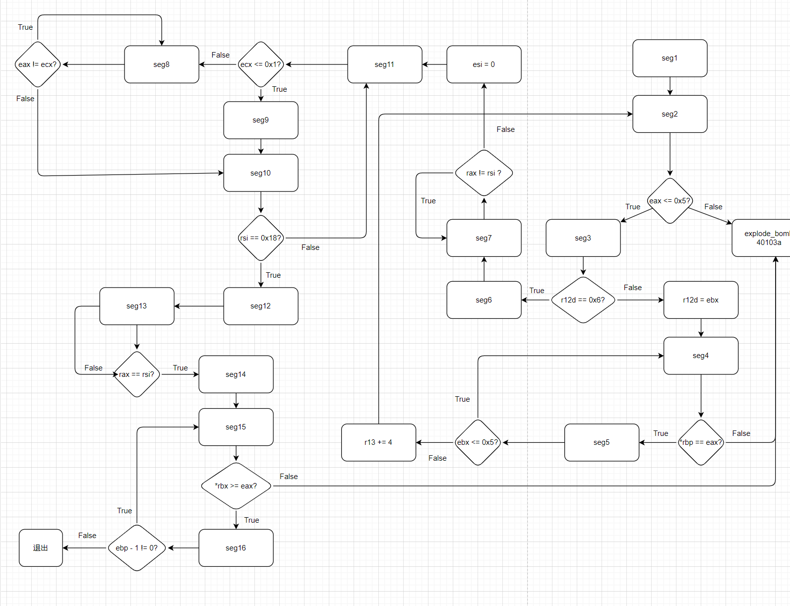
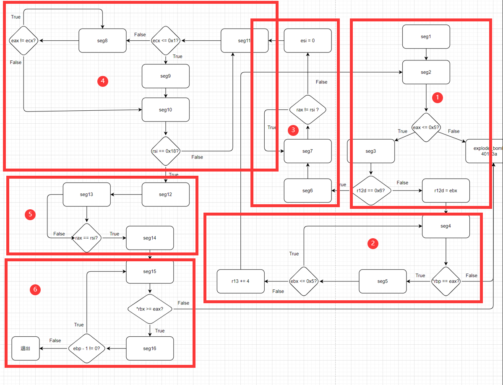
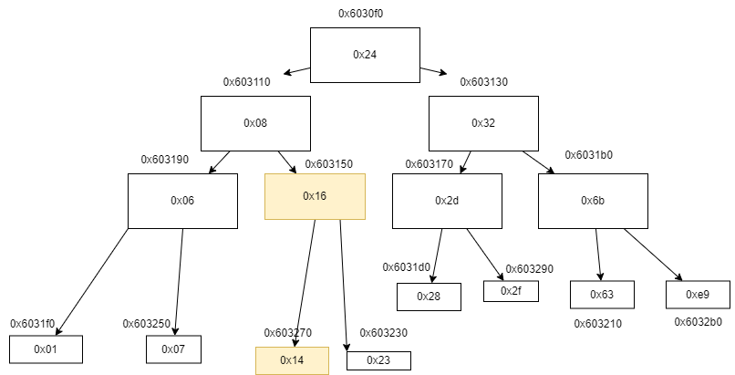

# 前言
我看见网上非常多的教程里面是一边使用 gdb 调试（过程中可能引爆炸弹），一边探索结果的。他们可能多次启动了 GDB 来完成实验。但是我在 bomb.c 中看到了如下指示:
No VICTIM may debug, reverse-engineer, run "strings" on, decompile, decrypt, or use any other technique to gain knowledge of and defuse the BOMB.
并且在 CSAPP 3e 的 handout 中也写的很清楚，不应该多次启动 gdb 来通过输入随机序列的方式来探测密码，毕竟解引的机会只有一次。如果引爆炸弹，autolab 的分数会掉。所以正确的方法应该是对汇编程序进行逆向分析，然后推算炸弹的密码，而不是通过多次输入字符串来利用炸弹进行测试。
不要一开始就开 gdb 运行 phase ，可以先启动 gdb ，在 main 函数部分打断点，因为很多地方需要从 gdb 中获取信息，但是我们又不能直接开始做题，因为一做题就无法二次启动 gdb 了（会扣实验分）。最好是把每个 phase 都分析透彻，得出确定的答案了，再在 gdb 中运行，因为中间没有空闲给你打断点和运行，直接进入 gets 输入了。
6 道题的答案为（如果用文件输入的话，记得最后有个换行符，否则炸弹爆炸）：
Border relations with Canada have never been better.
1 2 4 8 16 32
0 207
0 0 DrEvil
IONEFG
4 3 2 1 6 5
20
# 题目浏览
首先我们使用 wget 命令从实验官网下载 tar 文件，使用 tar xvf bomb.tar 解压文件。
打开文件夹，里面有 2 个重要文件，分别是 bomb.c 和 bomb 二进制文件。我们使用 objdump -d bomb > bomb.s 生成二进制可执行文件的反汇编并存储在 bomb.s 中。 bomb.c 中只有 main 函数的部分， main 函数调用的那些函数只在二进制文件和汇编代码中存在。
我们首先来看 bomb.c ，其中含有 6 个 phase 的炸弹，我们需要依次解开。在函数最开始处作者声明可以有多种输入格式，可以从 stdin 获取输入，也可以从文件获取输入。每个 phase 都有如下两行：
phase_n(input); /* Run the phase */ | |
phase_defused(); /* Drat! They figured it out! |
# phase1 分析：基础读值
phase_1 的汇编代码如下：
0000000000400ee0 <phase_1>:
400ee0: 48 83 ec 08 sub $0x8,%rsp
400ee4: be 00 24 40 00 mov $0x402400,%esi
400ee9: e8 4a 04 00 00 callq 401338 <strings_not_equal>
400eee: 85 c0 test %eax,%eax
400ef0: 74 05 je 400ef7 <phase_1+0x17>
400ef2: e8 43 05 00 00 callq 40143a <explode_bomb>
400ef7: 48 83 c4 08 add $0x8,%rsp
400efb: c3 retq
其过程如下：
- 留出 8 个字节的空间
- 让
%esi = 0x402400， - 调用
strings_not_equal函数 - 测试
%eax是否等于 0 - 若返回值为 0，则恢复栈帧，退出
- 否则引爆炸弹
这里推测 %esi 是给 strings_not_equal 提供的参数，且 string_not_equal 返回的是个 int 类型整数。
我们打开 gdb ，打好断点并运行，输入 call strings_not_equal("a","a") 发现返回 0。输入 call string_length("a") 发现返回 1。那么 strings_not_equal 的作用就是判断两字符串是否不相等， string_length 的作用就是计算字符串的长度。
我们的目的是让 strings_not_equal 返回 0，也就是说我们需要传入两个相同的字符串。那么问题在于我们传入的字符串存储在哪里呢？我们看一下 strings_not_equal 的反汇编代码：
0000000000401338 <strings_not_equal>:
seg1:
401338: 41 54 push %r12
40133a: 55 push %rbp
40133b: 53 push %rbx
40133c: 48 89 fb mov %rdi,%rbx
40133f: 48 89 f5 mov %rsi,%rbp
401342: e8 d4 ff ff ff callq 40131b <string_length>
401347: 41 89 c4 mov %eax,%r12d
40134a: 48 89 ef mov %rbp,%rdi
40134d: e8 c9 ff ff ff callq 40131b <string_length>
401352: ba 01 00 00 00 mov $0x1,%edx
401357: 41 39 c4 cmp %eax,%r12d
40135a: 75 3f jne 40139b <strings_not_equal+0x63>
40135c: 0f b6 03 movzbl (%rbx),%eax
40135f: 84 c0 test %al,%al
401361: 74 25 je 401388 <strings_not_equal+0x50>
401363: 3a 45 00 cmp 0x0(%rbp),%al
401366: 74 0a je 401372 <strings_not_equal+0x3a>
401368: eb 25 jmp 40138f <strings_not_equal+0x57>
seg2:
40136a: 3a 45 00 cmp 0x0(%rbp),%al
40136d: 0f 1f 00 nopl (%rax)
401370: 75 24 jne 401396 <strings_not_equal+0x5e>
seg3:
401372: 48 83 c3 01 add $0x1,%rbx
401376: 48 83 c5 01 add $0x1,%rbp
40137a: 0f b6 03 movzbl (%rbx),%eax
40137d: 84 c0 test %al,%al
40137f: 75 e9 jne 40136a <strings_not_equal+0x32>
401381: ba 00 00 00 00 mov $0x0,%edx
401386: eb 13 jmp 40139b <strings_not_equal+0x63>
seg4:
401388: ba 00 00 00 00 mov $0x0,%edx
40138d: eb 0c jmp 40139b <strings_not_equal+0x63>
seg5:
40138f: ba 01 00 00 00 mov $0x1,%edx
401394: eb 05 jmp 40139b <strings_not_equal+0x63>
seg6:
401396: ba 01 00 00 00 mov $0x1,%edx
seg7:
40139b: 89 d0 mov %edx,%eax
40139d: 5b pop %rbx
40139e: 5d pop %rbp
40139f: 41 5c pop %r12
4013a1: c3 retq
其 C 语言代码分析如下：
seg2() | |
{ | |
if(al != *rbp) { | |
seg6(); | |
} | |
else{ | |
seg3(); | |
} | |
} | |
seg3() | |
{ | |
rbx += 1; | |
rbp += 1; | |
eax = *rbx; | |
if(al != 0) { | |
// seg2 | |
seg2(); | |
} | |
else { | |
edx = 0; | |
seg7(); | |
} | |
} | |
seg4() | |
{ | |
edx = 0; | |
seg7(); | |
} | |
seg5() | |
{ | |
edx = 1; | |
seg7(); | |
} | |
seg6() { | |
edx = 1; | |
seg7(); | |
} | |
seg7() | |
{ | |
eax = edx; | |
// 还原 rbx rbp r12 | |
return eax; | |
} | |
// 传入参数有 rdi rsi，返回值在 eax 中 | |
int strings_not_equal(char* str) | |
{ | |
// seg1 | |
// 保存 r12 rbp rbx 的值 | |
rbx = rdi | |
rbp = rsi | |
call string_length | |
r12d = eax | |
rdi = rbp | |
call string_length | |
edx = 0x1; | |
if(r12d != eax) { | |
seg7(); | |
} | |
else { | |
eax = *rbx; | |
if(al == 0) { | |
seg4(); | |
} | |
else { | |
if(al == *rbp) { | |
seg3(); | |
} | |
else { | |
seg5(); | |
} | |
} | |
} | |
} |
我们对调用的函数 string_length 反汇编看一下：
000000000040131b <string_length>:
40131b: 80 3f 00 cmpb $0x0,(%rdi)
40131e: 74 12 je 401332 <string_length+0x17>
401320: 48 89 fa mov %rdi,%rdx
401323: 48 83 c2 01 add $0x1,%rdx
401327: 89 d0 mov %edx,%eax
401329: 29 f8 sub %edi,%eax
40132b: 80 3a 00 cmpb $0x0,(%rdx)
40132e: 75 f3 jne 401323 <string_length+0x8>
401330: f3 c3 repz retq
401332: b8 00 00 00 00 mov $0x0,%eax
401337: c3 retq
其 C 语言转化如下：
// 传入参数为 rdi，推测其为字符串的首地址 | |
int string_length() | |
{ | |
if(*rdi == 0x0) { | |
rax = 0; | |
return rax; | |
} | |
rdx = rdi; | |
do{ | |
rdx += 0x1; | |
eax = edx; | |
eax -= edi; | |
}while(*rdx != 0x0); | |
return rax; | |
} |
因为 string_length 中传入的应该是字符串首地址，存储在寄存器 %rdi 中。而 strings_not_equal 中我们使用了两个寄存器 %rdi 和 %rsi ，那么 %rsi 中保存的应该是第二个字符串的地址。而在 phase_1 中，我们让 %rsi = 0x402400 ，也就是说 0x402400 这里有个字符串，我们要让输入的字符串和这里的字符串相同，才能让 %rax = 0 。
输入 x/s 0x402400 ，得到如下结果：
(gdb) x/s 0x402400
0x402400: "Border relations with Canada have never been better."
这就是我们应该在 phase_1 中输入的字符串了！让我们来试试！结果如下：
(gdb)
Phase 1 defused. How about the next one?
81 printf("Phase 1 defused. How about the next one?\n");
成功！现在准备解决 phase_2 的问题， gdb 先不管。
# phase2 分析：分支跳转 & 循环
phase_2 的反汇编如下：
0000000000400efc <phase_2>:
400efc: 55 push %rbp
400efd: 53 push %rbx
400efe: 48 83 ec 28 sub $0x28,%rsp
400f02: 48 89 e6 mov %rsp,%rsi
400f05: e8 52 05 00 00 callq 40145c <read_six_numbers>
400f0a: 83 3c 24 01 cmpl $0x1,(%rsp)
400f0e: 74 20 je 400f30 <phase_2+0x34>
400f10: e8 25 05 00 00 callq 40143a <explode_bomb>
400f15: eb 19 jmp 400f30 <phase_2+0x34>
400f17: 8b 43 fc mov -0x4(%rbx),%eax
400f1a: 01 c0 add %eax,%eax
400f1c: 39 03 cmp %eax,(%rbx)
400f1e: 74 05 je 400f25 <phase_2+0x29>
400f20: e8 15 05 00 00 callq 40143a <explode_bomb>
400f25: 48 83 c3 04 add $0x4,%rbx
400f29: 48 39 eb cmp %rbp,%rbx
400f2c: 75 e9 jne 400f17 <phase_2+0x1b>
400f2e: eb 0c jmp 400f3c <phase_2+0x40>
400f30: 48 8d 5c 24 04 lea 0x4(%rsp),%rbx
400f35: 48 8d 6c 24 18 lea 0x18(%rsp),%rbp
400f3a: eb db jmp 400f17 <phase_2+0x1b>
400f3c: 48 83 c4 28 add $0x28,%rsp
400f40: 5b pop %rbx
400f41: 5d pop %rbp
400f42: c3 retq
我们将其转化为 C 语言试试：
// // 400f17 | |
// eax = *(rbx - 0x4); | |
// eax *= 2; | |
// if(*rbx == eax) { | |
// rbx += 4; | |
// if(rbx != rbp) | |
// //400f17 | |
// else | |
// //400f3c | |
// // 恢复栈空间和 rbp rbx | |
// return eax; | |
// }else { | |
// call explode_bomb | |
// } | |
int phase_2() | |
{ | |
// 保存 rbp rbx | |
//rsp 留出 40 个字节 | |
rsi = rsp; | |
call read_six_numbers | |
if(*rsp == 0x1) { | |
// 400f30 | |
rbx = rsp + 0x4; | |
rbp = rsp + 24; | |
// 400f17 改写为循环 | |
do { | |
eax = *(rbx - 0x4); | |
eax *= 2; | |
if(*rbx != eax) | |
call explode_bomb | |
rbx += 4; | |
}while(rbx != rbp) | |
return eax; | |
} | |
else { | |
call explode_bomb | |
} | |
} |
我们对 read_six_numebrs 反汇编一下看看：
000000000040145c <read_six_numbers>:
40145c: 48 83 ec 18 sub $0x18,%rsp
401460: 48 89 f2 mov %rsi,%rdx
401463: 48 8d 4e 04 lea 0x4(%rsi),%rcx
401467: 48 8d 46 14 lea 0x14(%rsi),%rax
40146b: 48 89 44 24 08 mov %rax,0x8(%rsp)
401470: 48 8d 46 10 lea 0x10(%rsi),%rax
401474: 48 89 04 24 mov %rax,(%rsp)
401478: 4c 8d 4e 0c lea 0xc(%rsi),%r9
40147c: 4c 8d 46 08 lea 0x8(%rsi),%r8
401480: be c3 25 40 00 mov $0x4025c3,%esi
401485: b8 00 00 00 00 mov $0x0,%eax
40148a: e8 61 f7 ff ff callq 400bf0 <__isoc99_sscanf@plt>
40148f: 83 f8 05 cmp $0x5,%eax
401492: 7f 05 jg 401499 <read_six_numbers+0x3d>
401494: e8 a1 ff ff ff callq 40143a <explode_bomb>
401499: 48 83 c4 18 add $0x18,%rsp
40149d: c3 retq
这里也有 explode_bomb ，有玄机啊～
先分析 read_six_numbers ，这里就一个跳转，整个过程容易分析：
1. 保留 24 个字节的位置
2. rdx = rsi
3. rcx = rsi + 0x4
4. rax = rsi + 20
5. *(rsp + 8) = rax
6. rax = rsi + 16
7. *rsp = rax
8. r9 = rsi + 12
9. r8 = rsi + 8
10. esi = 0x4025c3
11. eax = 0
12. call sccanf 获取输入
13. if(eax > 5) 恢复栈，返回 eax
14. 否则爆炸
这里传入的应该只有一个参数，就是 %rsi 寄存器中的值，在前面 phase_2 里面 %rsi = %rsp 。那么输入的值应该是从 %rsp 开始存储。我们使用如下命令打印 0x4025c3 处的值，得到如下结果：
(gdb) x/s 0x4025c3
0x4025c3: "%d %d %d %d %d %d"
这里 %eax 中存储的应该是 sscanf 读入的数据个数，如果 %eax > 5 的话， read_six_numbers 顺利过关，否则爆炸。
那么数组应该是保存在 %rsi 指向的位置（也就是一开始 %rsp 指向的位置），通过分析 phase_2 的代码，我们可以总结出以下要求：
- 输入的第 1 个数必须是 1
- 下一个数是前一个数的两倍
- 输入 6 个数字，而且是整数，不是浮点数
那么了解了要求后，我们需要输入 1 2 4 8 16 32 这 6 个数，看看结果：
(gdb)
That's number 2. Keep going!
88 printf("That's number 2. Keep going!\n");
phase_2 破解成功！我们继续 phase_3 ！
# phase3 分析： switch 语句
phase_3 的反汇编代码如下：
0000000000400f43 <phase_3>:
400f43: 48 83 ec 18 sub $0x18,%rsp
400f47: 48 8d 4c 24 0c lea 0xc(%rsp),%rcx
400f4c: 48 8d 54 24 08 lea 0x8(%rsp),%rdx
400f51: be cf 25 40 00 mov $0x4025cf,%esi
400f56: b8 00 00 00 00 mov $0x0,%eax
400f5b: e8 90 fc ff ff callq 400bf0 <__isoc99_sscanf@plt>
400f60: 83 f8 01 cmp $0x1,%eax
400f63: 7f 05 jg 400f6a <phase_3+0x27>
400f65: e8 d0 04 00 00 callq 40143a <explode_bomb>
400f6a: 83 7c 24 08 07 cmpl $0x7,0x8(%rsp)
400f6f: 77 3c ja 400fad <phase_3+0x6a>
400f71: 8b 44 24 08 mov 0x8(%rsp),%eax
400f75: ff 24 c5 70 24 40 00 jmpq *0x402470(,%rax,8)
400f7c: b8 cf 00 00 00 mov $0xcf,%eax
400f81: eb 3b jmp 400fbe <phase_3+0x7b>
400f83: b8 c3 02 00 00 mov $0x2c3,%eax
400f88: eb 34 jmp 400fbe <phase_3+0x7b>
400f8a: b8 00 01 00 00 mov $0x100,%eax
400f8f: eb 2d jmp 400fbe <phase_3+0x7b>
400f91: b8 85 01 00 00 mov $0x185,%eax
400f96: eb 26 jmp 400fbe <phase_3+0x7b>
400f98: b8 ce 00 00 00 mov $0xce,%eax
400f9d: eb 1f jmp 400fbe <phase_3+0x7b>
400f9f: b8 aa 02 00 00 mov $0x2aa,%eax
400fa4: eb 18 jmp 400fbe <phase_3+0x7b>
400fa6: b8 47 01 00 00 mov $0x147,%eax
400fab: eb 11 jmp 400fbe <phase_3+0x7b>
400fad: e8 88 04 00 00 callq 40143a <explode_bomb>
400fb2: b8 00 00 00 00 mov $0x0,%eax
400fb7: eb 05 jmp 400fbe <phase_3+0x7b>
400fb9: b8 37 01 00 00 mov $0x137,%eax
400fbe: 3b 44 24 0c cmp 0xc(%rsp),%eax
400fc2: 74 05 je 400fc9 <phase_3+0x86>
400fc4: e8 71 04 00 00 callq 40143a <explode_bomb>
400fc9: 48 83 c4 18 add $0x18,%rsp
400fcd: c3 retq
这段代码较长，我们将其转化为 C 语言试试：
我们先不转化成 C 语言，先来看一下让炸弹爆炸的几个条件。炸弹爆炸出现在如下几个地方：
400f65: e8 d0 04 00 00 callq 40143a <explode_bomb>
400fad: e8 88 04 00 00 callq 40143a <explode_bomb>
400fc4: e8 71 04 00 00 callq 40143a <explode_bomb>
对第一处，我们先进行分析：
400f43: 48 83 ec 18 sub $0x18,%rsp
400f47: 48 8d 4c 24 0c lea 0xc(%rsp),%rcx
400f4c: 48 8d 54 24 08 lea 0x8(%rsp),%rdx
400f51: be cf 25 40 00 mov $0x4025cf,%esi
400f56: b8 00 00 00 00 mov $0x0,%eax
400f5b: e8 90 fc ff ff callq 400bf0 <__isoc99_sscanf@plt>
400f60: 83 f8 01 cmp $0x1,%eax
400f63: 7f 05 jg 400f6a <phase_3+0x27>
400f65: e8 d0 04 00 00 callq 40143a <explode_bomb>
这段代码首先分配了 24 个字节的栈空间，随后做了如下步骤：
- rcx = rsp + 12
- rdx = rsp + 8
- esi = 0x4025cf
- eax = 0
- call sscanf
- 将 eax 与 1 进行比较
- 如果 eax > 1，跳转到
400f6a - 否则炸弹爆炸
这段代码和我们上一段看到的 sscanf 之前的代码非常相似， 0x4025cf 多半是一个让你输入一串东西的指令地址，我们看一下 %esi(0x4025cf) 附近的值等于多少：
(gdb) x/s 0x4025cf
0x4025cf: "%d %d"
这里说明我们需要输入 2 个数字，如果不是输入 2 个数字的话，炸弹就会爆炸。第一个要求明确了。
再来看第二处炸弹的位置前后的代码，它的上一条代码是个 jmp ，那么就不可能从那儿执行到这儿来，因为炸弹爆炸了，所以他后面的代码也不可能执行，所以我们只需要看看哪些代码会跳转到这一条 ( 400fad ) 上来。
400f6a: 83 7c 24 08 07 cmpl $0x7,0x8(%rsp)
400f6f: 77 3c ja 400fad <phase_3+0x6a>
这段代码出现在我们获取了两个整数之后。这段代码比较了 *(rsp + 8) 和 0x7 的值。为了不跳转到 400fad ，我们需要让 %rsp + 8 <= 0x7 。第二个要求明确了。
最后一个炸弹前的代码如下：
400fb9: b8 37 01 00 00 mov $0x137,%eax
400fbe: 3b 44 24 0c cmp 0xc(%rsp),%eax
400fc2: 74 05 je 400fc9 <phase_3+0x86>
400fc4: e8 71 04 00 00 callq 40143a <explode_bomb>
这段代码中实现如下操作：
- eax = 0x137
- 如果
eax != *(rsp + 12)，那么炸弹爆炸，也就是说输入的第二个参数最后必须等于0x137
现在问题来了，有几个代码通过跳转来到了 400fbe 位置，我们需要分析其情况，看看其是否对 %rsp + 12 处的值做了操作。
400f7c: b8 cf 00 00 00 mov $0xcf,%eax ->eax = 0xcf
400f81: eb 3b jmp 400fbe <phase_3+0x7b>
400f83: b8 c3 02 00 00 mov $0x2c3,%eax -> eax = 0x2c3
400f88: eb 34 jmp 400fbe <phase_3+0x7b>
400f8a: b8 00 01 00 00 mov $0x100,%eax -> eax = 0x100
400f8f: eb 2d jmp 400fbe <phase_3+0x7b>
400f91: b8 85 01 00 00 mov $0x185,%eax -> eax = 0x185
400f96: eb 26 jmp 400fbe <phase_3+0x7b>
400f98: b8 ce 00 00 00 mov $0xce,%eax -> eax = 0xce
400f9d: eb 1f jmp 400fbe <phase_3+0x7b>
400f9f: b8 aa 02 00 00 mov $0x2aa,%eax -> eax = 0x2aa
400fa4: eb 18 jmp 400fbe <phase_3+0x7b>
400fa6: b8 47 01 00 00 mov $0x147,%eax -> eax = 0x147
400fab: eb 11 jmp 400fbe <phase_3+0x7b>
400fad: e8 88 04 00 00 callq 40143a <explode_bomb>
400fb2: b8 00 00 00 00 mov $0x0,%eax -> eax = 0
400fb7: eb 05 jmp 400fbe <phase_3+0x7b>
400fb9: b8 37 01 00 00 mov $0x137,%eax -> eax = 0x137
400fbe: 3b 44 24 0c cmp 0xc(%rsp),%eax
400fc2: 74 05 je 400fc9 <phase_3+0x86>
400fc4: e8 71 04 00 00 callq 40143a <explode_bomb>
要注意的是指令 400f75: ff 24 c5 70 24 40 00 jmpq *0x402470(,%rax,8) 中实现的是间接跳转（因为加了 * ），那么我们需要找到 0x402470 处的 8 字节地址，以它为跳转的基地址。
(gdb) x/wx 0x402470
0x402470: 0x00400f7c
这个地址就是 0x400f7c 。我们前面把输入的第一个数字移到了 %eax ，那么我们需要通过 0x400f7c + 8 * %eax 来确定我们的跳转目标。跳转以后会赋给 %eax 相应的值，而后我们需要保证我们输入的第二个数等于 %eax 。
这样逻辑就捋顺了，整个代码应该是一个 switch_case 的结构，而 0x400f7c 就是这个跳转表的首地址， %eax 是对应的索引。这个 phase 的要求就是：
- 输入 2 个整数
- 第一个整数必须小于等于 0x7，因为最多只有 7 个
case - 输入的第二个数必须和其
case中赋给%eax的值相同
我们设计第一个数是 0 ，那么第二个数就是 0xcf ( 207 )，我们试一试：
main (argc=<optimized out>, argv=<optimized out>) at bomb.c:90
90 /* I guess this is too easy so far. Some more complex code will
(gdb) n
91 * confuse people. */
(gdb) n
Halfway there!
94 phase_defused();
成功！
# phase4 分析：递归
首先还是对 phase_4 进行了反汇编：
000000000040100c <phase_4>:
40100c: 48 83 ec 18 sub $0x18,%rsp
401010: 48 8d 4c 24 0c lea 0xc(%rsp),%rcx
401015: 48 8d 54 24 08 lea 0x8(%rsp),%rdx
40101a: be cf 25 40 00 mov $0x4025cf,%esi
40101f: b8 00 00 00 00 mov $0x0,%eax
401024: e8 c7 fb ff ff callq 400bf0 <__isoc99_sscanf@plt>
401029: 83 f8 02 cmp $0x2,%eax
40102c: 75 07 jne 401035 <phase_4+0x29>
40102e: 83 7c 24 08 0e cmpl $0xe,0x8(%rsp)
401033: 76 05 jbe 40103a <phase_4+0x2e>
401035: e8 00 04 00 00 callq 40143a <explode_bomb>
40103a: ba 0e 00 00 00 mov $0xe,%edx
40103f: be 00 00 00 00 mov $0x0,%esi
401044: 8b 7c 24 08 mov 0x8(%rsp),%edi
401048: e8 81 ff ff ff callq 400fce <func4>
40104d: 85 c0 test %eax,%eax
40104f: 75 07 jne 401058 <phase_4+0x4c>
401051: 83 7c 24 0c 00 cmpl $0x0,0xc(%rsp)
401056: 74 05 je 40105d <phase_4+0x51>
401058: e8 dd 03 00 00 callq 40143a <explode_bomb>
40105d: 48 83 c4 18 add $0x18,%rsp
401061: c3 retq
在本代码中进行了如下过程：
- 预留出 24 个字节的空间
- rcx = rsp + 12
- rdx = rsp + 8
- esi = 0x4025cf
- eax = 0
- sscanf 调用
- 下面是带分支部分：
if(eax != 0x2) { | |
call bomb_explode | |
} | |
if(arg3 > 0xe) { | |
call bomb_explode | |
} | |
edx = 0xe; | |
esi = 0x0; | |
edi = arg3 | |
ret = func4(arg1,arg2,arg3) | |
if(eax != 0) | |
call bomb_explode | |
if(arg2 == 0) | |
return eax; | |
else | |
call bomb_explode |
这里出现了非常熟悉的 sscanf 调用，我们先看看 0x4025cf 处是啥（如果不出意外应该是 %d %d ）
(gdb) x/s 0x4025cf
0x4025cf: "%d %d"
果然！果然！是让我们输入 2 个整数，如果不是两个的话就爆炸！此外，一开始的 arg3 应该小于等于 0xe ，否则爆炸，此外函数 func4 返回的 eax 应该为 0，否则爆炸。此外， *(rsp + 12) （如果 func4 里面没改变这个值的话应该还是 arg2 ）必须等于 0。
那么我们来分析一下 func4 ：
0000000000400fce <func4>:
400fce: 48 83 ec 08 sub $0x8,%rsp
400fd2: 89 d0 mov %edx,%eax
400fd4: 29 f0 sub %esi,%eax
400fd6: 89 c1 mov %eax,%ecx
400fd8: c1 e9 1f shr $0x1f,%ecx
400fdb: 01 c8 add %ecx,%eax
400fdd: d1 f8 sar %eax
400fdf: 8d 0c 30 lea (%rax,%rsi,1),%ecx
400fe2: 39 f9 cmp %edi,%ecx
400fe4: 7e 0c jle 400ff2 <func4+0x24>
400fe6: 8d 51 ff lea -0x1(%rcx),%edx
400fe9: e8 e0 ff ff ff callq 400fce <func4>
400fee: 01 c0 add %eax,%eax
400ff0: eb 15 jmp 401007 <func4+0x39>
400ff2: b8 00 00 00 00 mov $0x0,%eax
400ff7: 39 f9 cmp %edi,%ecx
400ff9: 7d 0c jge 401007 <func4+0x39>
400ffb: 8d 71 01 lea 0x1(%rcx),%esi
400ffe: e8 cb ff ff ff callq 400fce <func4>
401003: 8d 44 00 01 lea 0x1(%rax,%rax,1),%eax
401007: 48 83 c4 08 add $0x8,%rsp
40100b: c3 retq
看起来有点长，但是不要惊慌！这里只有 3 个跳转，而且其中两个都是跳转到最后恢复栈的位置。其主要步骤如下：
- 分配 8 个字节的栈空间
- eax = edx
- eax -= esi
-> eax = edx - esi - ecx = eax
- ecx >> 31
-> ecx = eax >> 31 (eax 符号位拉满) - eax += ecx
- eax >> 1
-> eax = (eax + ecx) >> 1 - ecx = rax + rsi
- 下面进入一段分支：
if(ecx <= edi) { | |
//400ff2 | |
eax = 0; | |
if(ecx >= edi) { | |
// 401007 | |
return rax; | |
} | |
else{ | |
esi = rcx + 0x1; | |
ret = func4(arg1,arg2,arg3) | |
eax = rax + rax + 1; | |
return rax; | |
} | |
} | |
else { | |
edx = rcx - 0x1; | |
ret = func4(arg1,arg2,arg3) | |
eax = eax * 2; | |
return rax; | |
} |
分析 func4 ，我们不难发现，该函数的传入参数是 %edx 和 %esi ，此外该函数是个递归函数。函数总的过程应该如下：
eax = edx - esi | |
ecx = eax >> 31 (逻辑右移) | |
eax = (eax + ecx) >> 1 (算数右移) | |
ecx = rax + rsi | |
if(ecx <= edi) { | |
eax = 0; | |
if(ecx >= edi) { | |
// 401007 | |
return rax; | |
} | |
else{ | |
esi = rcx + 0x1; | |
ret = func4(arg1,arg2,arg3) | |
eax = rax * 2 + 1; | |
return rax; | |
} | |
} | |
else { | |
edx = rcx - 0x1; | |
ret = func4(arg1,arg2,arg3) | |
eax = eax * 2; | |
return rax; | |
} |
经过变量调整重写的 C 版本如下：
ret = arg3 - arg2 | |
mid = ret >> 31 | |
ret = (ret + ret >> 31) / 2; | |
mid = ret + arg2 | |
if(mid <= arg1) { | |
ret = 0; | |
if(mid >= arg1) { | |
return ret; | |
} | |
else{ | |
// arg2 = mid + 1; | |
return func4(arg1,mid + 1,arg3) * 2 + 1; | |
} | |
} | |
else { | |
// arg3 = mid - 1; | |
return func4(arg1,arg2,mid - 1) * 2; | |
} |
我们看看什么情况下 eax = 0 。（这到底是什么东西啊摔！）真没看懂是什么东西，试了个 0 0 ，通过了，先 mark 一下，后面再来检验：
(gdb)
0 0
95 printf("Halfway there!\n");
# phase5 分析: canary ，循环与 ASCII 编码字符串
(gdb)
97 /* Oh yeah? Well, how good is your math? Try on this saucy problem! */
数学不好呜呜呜。
phase_5 的反汇编代码如下：
0000000000401062 <phase_5>:
seg1:
401062: 53 push %rbx
401063: 48 83 ec 20 sub $0x20,%rsp
401067: 48 89 fb mov %rdi,%rbx
40106a: 64 48 8b 04 25 28 00 mov %fs:0x28,%rax
401071: 00 00
401073: 48 89 44 24 18 mov %rax,0x18(%rsp)
401078: 31 c0 xor %eax,%eax
40107a: e8 9c 02 00 00 callq 40131b <string_length>
40107f: 83 f8 06 cmp $0x6,%eax
401082: 74 4e je 4010d2 <phase_5+0x70>
401084: e8 b1 03 00 00 callq 40143a <explode_bomb>
401089: eb 47 jmp 4010d2 <phase_5+0x70>
seg2:
40108b: 0f b6 0c 03 movzbl (%rbx,%rax,1),%ecx
40108f: 88 0c 24 mov %cl,(%rsp)
401092: 48 8b 14 24 mov (%rsp),%rdx
401096: 83 e2 0f and $0xf,%edx
401099: 0f b6 92 b0 24 40 00 movzbl 0x4024b0(%rdx),%edx
4010a0: 88 54 04 10 mov %dl,0x10(%rsp,%rax,1)
4010a4: 48 83 c0 01 add $0x1,%rax
4010a8: 48 83 f8 06 cmp $0x6,%rax
4010ac: 75 dd jne 40108b <phase_5+0x29>
4010ae: c6 44 24 16 00 movb $0x0,0x16(%rsp)
4010b3: be 5e 24 40 00 mov $0x40245e,%esi
4010b8: 48 8d 7c 24 10 lea 0x10(%rsp),%rdi
4010bd: e8 76 02 00 00 callq 401338 <strings_not_equal>
4010c2: 85 c0 test %eax,%eax
4010c4: 74 13 je 4010d9 <phase_5+0x77>
4010c6: e8 6f 03 00 00 callq 40143a <explode_bomb>
4010cb: 0f 1f 44 00 00 nopl 0x0(%rax,%rax,1)
4010d0: eb 07 jmp 4010d9 <phase_5+0x77>
seg3:
4010d2: b8 00 00 00 00 mov $0x0,%eax
4010d7: eb b2 jmp 40108b <phase_5+0x29>
seg4:
4010d9: 48 8b 44 24 18 mov 0x18(%rsp),%rax
4010de: 64 48 33 04 25 28 00 xor %fs:0x28,%rax
4010e5: 00 00
4010e7: 74 05 je 4010ee <phase_5+0x8c>
4010e9: e8 42 fa ff ff callq 400b30 <__stack_chk_fail@plt>
seg5:
4010ee: 48 83 c4 20 add $0x20,%rsp
4010f2: 5b pop %rbx
4010f3: c3 retq
整个过程还原为 C 语言如下：
// 这个函数的参数是： % rdi | |
int phase5(char* buf) | |
{ | |
// 保存 rbx | |
// 留出 32 个字节的空间 | |
rbx = rdi //buf 的地址保存在 rbx 中 | |
*(rsp + 24) = canary | |
eax = 0 // 返回值 = 0 | |
call string_length // 返回字符串长度 | |
if(eax == 0x6) { | |
eax = 0 | |
// //seg2 | |
// ecx = *(rbx + rax) | |
// *rsp = cl | |
// rdx = *rsp | |
// edx = edx & 0xf | |
// edx = *(rdx + 0x4024b0) | |
// *(rsp + rax + 16) = dl | |
// rax = rax & 0x1 | |
// if(rax != 0x6) | |
// jump to seg2 | |
//seg2 应该是个循环，其格式如下： | |
do { | |
ecx = *(rbx + rax) -> 把(str+i)指向的4个字节赋给ecx | |
*rsp = cl -> rsp指向处存储ecx的最低一个字节 | |
rdx = *rsp -> rdx = 最低的那个字节 | |
edx = edx & 0xf -> edx = 最低4位 | |
edx = *(rdx + 0x4024b0) -> edx = *(最低四位 + 0x4024b0) | |
*(rsp + rax + 16) = dl -> rsp[i + 16] = edx的最低四位 | |
rax = rax + 0x1 -> rax 递增 | |
}while(rax != 0x6); | |
*(rsp + 22) = 0 -> rsp[22] = 0 // 字符串的末尾是 `\0` | |
esi = 0x40245e | |
rdi = rsp + 16 | |
call strings_not_equal // 判断 esi 处的字符串和 rsp + 16 处的 6 个字节的字符串是否相等 | |
if(eax == 0) { | |
// seg4 | |
rax = *(rsp + 24) // canary | |
// compare rax and canary | |
if(rax == canary) { | |
//seg5 | |
// release the stack | |
return rax; | |
} | |
else { | |
call __stack_chk_fail | |
} | |
}else { | |
call bomb_explode | |
} | |
} | |
else { | |
call bomb_explode | |
} | |
} |
0x40245e 处的字符串如下：
(gdb) x/s 0x40245e
0x40245e: "flyers"
从上面的内容中我们可以看出：
- 必须输入 6 个字符长度的字符串，否则炸弹爆炸
rsp + 16处的字符串和0x40245e处的字符串flyers相同。- 我们需要计算一下 seg2 那段到底对字符串做了什么操作：
edx的值 = *(0x4024b0 + str[i]的最低4位)，然后str[i] = edx最低四位 - 最后
str需要等于flyers，也就是说*(0x4024b0 + str[i]的最低4位)的最低4位 = flyers
其中 flyers 的编码为： 0x40245e: 0x66 0x6c 0x79 0x65 0x72 0x73 0x00 ，最后一个 0x00 在程序中手动设置了，所以无需自己设置。
打印一下 0x4024b0 开始的字符串： maduiersnfotvbylSo you think you can stop the bomb with ctrl-c, do you?
因此，本题的目的是在 0x4024b0 开始的字符串中拼凑出 flyers ，然后把每个字符相对于开头的偏移量计算出来。其几个字符的地址分别是：
f:0x09l:0x0fy:0x0eers:0x05 0x06 0x07
综合起来是： 0x09 0x0f 0x0e 0x05 0x06 0x07 。我们来试一下 *(0x4024b0 + str[i]的最低4位) 是否等于 flyers 。测试出来是这样的。但是这 6 个字节不是字符，为了凑成字符，我们对每个数字加上 64（因为在计算的时候只取最低 4 位，所以对一个字节加上 64 不影响最后的偏移量），得到 73, 79,78, 69, 70, 71 (这里是 10 进制)，其对应的 ASCII 码是 IONEFG 。
# phase6 分析：超级无敌杂糅嵌套多层循环
phase_6 反汇编如下（哎哟我滴妈呀咋个这么长啊）：
00000000004010f4 <phase_6>:
seg1:
4010f4: 41 56 push %r14
4010f6: 41 55 push %r13
4010f8: 41 54 push %r12
4010fa: 55 push %rbp
4010fb: 53 push %rbx
4010fc: 48 83 ec 50 sub $0x50,%rsp
401100: 49 89 e5 mov %rsp,%r13
401103: 48 89 e6 mov %rsp,%rsi
401106: e8 51 03 00 00 callq 40145c <read_six_numbers>
40110b: 49 89 e6 mov %rsp,%r14
40110e: 41 bc 00 00 00 00 mov $0x0,%r12d
seg2:
401114: 4c 89 ed mov %r13,%rbp
401117: 41 8b 45 00 mov 0x0(%r13),%eax
40111b: 83 e8 01 sub $0x1,%eax
40111e: 83 f8 05 cmp $0x5,%eax
401121: 76 05 jbe 401128 <phase_6+0x34>
401123: e8 12 03 00 00 callq 40143a <explode_bomb>
seg3:
401128: 41 83 c4 01 add $0x1,%r12d
40112c: 41 83 fc 06 cmp $0x6,%r12d
401130: 74 21 je 401153 <phase_6+0x5f>
401132: 44 89 e3 mov %r12d,%ebx
seg4:
401135: 48 63 c3 movslq %ebx,%rax
401138: 8b 04 84 mov (%rsp,%rax,4),%eax
40113b: 39 45 00 cmp %eax,0x0(%rbp)
40113e: 75 05 jne 401145 <phase_6+0x51>
401140: e8 f5 02 00 00 callq 40143a <explode_bomb>
seg5:
401145: 83 c3 01 add $0x1,%ebx
401148: 83 fb 05 cmp $0x5,%ebx
40114b: 7e e8 jle 401135 <phase_6+0x41>
40114d: 49 83 c5 04 add $0x4,%r13
401151: eb c1 jmp 401114 <phase_6+0x20>
seg6:
401153: 48 8d 74 24 18 lea 0x18(%rsp),%rsi
401158: 4c 89 f0 mov %r14,%rax
40115b: b9 07 00 00 00 mov $0x7,%ecx
seg7:
401160: 89 ca mov %ecx,%edx
401162: 2b 10 sub (%rax),%edx
401164: 89 10 mov %edx,(%rax)
401166: 48 83 c0 04 add $0x4,%rax
40116a: 48 39 f0 cmp %rsi,%rax
40116d: 75 f1 jne 401160 <phase_6+0x6c>
40116f: be 00 00 00 00 mov $0x0,%esi
401174: eb 21 jmp 401197 <phase_6+0xa3>
seg8:
401176: 48 8b 52 08 mov 0x8(%rdx),%rdx
40117a: 83 c0 01 add $0x1,%eax
40117d: 39 c8 cmp %ecx,%eax
40117f: 75 f5 jne 401176 <phase_6+0x82>
401181: eb 05 jmp 401188 <phase_6+0x94>
seg9:
401183: ba d0 32 60 00 mov $0x6032d0,%edx
seg10:
401188: 48 89 54 74 20 mov %rdx,0x20(%rsp,%rsi,2)
40118d: 48 83 c6 04 add $0x4,%rsi
401191: 48 83 fe 18 cmp $0x18,%rsi
401195: 74 14 je 4011ab <phase_6+0xb7>
seg11:
401197: 8b 0c 34 mov (%rsp,%rsi,1),%ecx
40119a: 83 f9 01 cmp $0x1,%ecx
40119d: 7e e4 jle 401183 <phase_6+0x8f>
40119f: b8 01 00 00 00 mov $0x1,%eax
4011a4: ba d0 32 60 00 mov $0x6032d0,%edx
4011a9: eb cb jmp 401176 <phase_6+0x82>
seg12:
4011ab: 48 8b 5c 24 20 mov 0x20(%rsp),%rbx
4011b0: 48 8d 44 24 28 lea 0x28(%rsp),%rax
4011b5: 48 8d 74 24 50 lea 0x50(%rsp),%rsi
4011ba: 48 89 d9 mov %rbx,%rcx
seg13:
4011bd: 48 8b 10 mov (%rax),%rdx
4011c0: 48 89 51 08 mov %rdx,0x8(%rcx)
4011c4: 48 83 c0 08 add $0x8,%rax
4011c8: 48 39 f0 cmp %rsi,%rax
4011cb: 74 05 je 4011d2 <phase_6+0xde>
4011cd: 48 89 d1 mov %rdx,%rcx
4011d0: eb eb jmp 4011bd <phase_6+0xc9>
seg14:
4011d2: 48 c7 42 08 00 00 00 movq $0x0,0x8(%rdx)
4011d9: 00
4011da: bd 05 00 00 00 mov $0x5,%ebp
seg15:
4011df: 48 8b 43 08 mov 0x8(%rbx),%rax
4011e3: 8b 00 mov (%rax),%eax
4011e5: 39 03 cmp %eax,(%rbx)
4011e7: 7d 05 jge 4011ee <phase_6+0xfa>
4011e9: e8 4c 02 00 00 callq 40143a <explode_bomb>
seg16:
4011ee: 48 8b 5b 08 mov 0x8(%rbx),%rbx
4011f2: 83 ed 01 sub $0x1,%ebp
4011f5: 75 e8 jne 4011df <phase_6+0xeb>
4011f7: 48 83 c4 50 add $0x50,%rsp
4011fb: 5b pop %rbx
4011fc: 5d pop %rbp
4011fd: 41 5c pop %r12
4011ff: 41 5d pop %r13
401201: 41 5e pop %r14
401203: c3 retq s
我们将其分为 16 个 seg，然后绘制一下函数流程图试试，总体过程如图
。
然后，我们为了减小每步分析的工作量，根据跳转分支将其分为 6 个过程，如图

下面我们对这 6 个过程来进行分析：
# Proc 1
首先进入的是 seg1，其做的工作是：
- 压入
r14 r13 r12 rbp rbx - 留出 80 个字节的空间
r13 = rsp = rsi- 调用
call_six_numbers，经前文分析，read_six_numbers的传入参数为%rsi，返回值在%eax中，其存储了读入的数字的个数 r14 = rsp = rsi = r13，r12d = 0
下面进入 seg 2，其做的工作是：
- 让
rbp = r13，那么现在r13 = r14 = rsi = rsp = rbp - 让
eax = r13所指向的值 - 判断
eax - 1是否小于等于 5，如果eax - 1 > 5，那么炸弹爆炸，也就是说eax必须小于等于 6 - 正常情况下，进入 seg 3
进入 seg 3 分析：
r12d += 1- 将
r12d与 6 比较，如果r12d ！= 6，那么ebx = r12d，随后进入 seg 4 (proc 2 中) - 否则就进入 seg 6 (proc 3 中)
这里我们分析得到的结果是：
- seg 1 中进行了一些初始化的工作，让几个指针都指向输入数字的起始位置，并且让计数值
r12d = 0 - seg 2 中让
rbp 指向 r13所指向的位置(一开始r13 = r14 = rsp = rsi，因为后面还有进入seg 2的部分，所以不确定r13的指向会不会改变，先看看)，让eax = r13所指向的值，并且保证其必须小于等于 6 - seg 3 中让
r12d计数值增加，判断r12d是否等于6。如果不等于 6，就让其等于ebx，然后进入seg 4；否则进seg 6（看流程图可以看出，seg 6 离终点要更进一步，而 seg 4 在进入后做一些循环的工作后又会回到 seg 2，故我猜测这里 seg 4 以后的步骤是做了一些遍历的工作，但是在遍历的而过程中是读还是修改暂不清楚）
# Proc 2
接下来我们进入 seg 4：
- 我们首先让
rax = ebx(注意前面ebx = r12d, 此时r12d已经递增到下一个位置了)，那么这里rax = ebx = r12d - 让
eax = *(rsp + 4 * rax)，因为 rsp 是输入数字的起始位置，那么 rax 应该是一个索引，因为输入的是int类型，所以每次要* 4。假定输入的数字的字符串叫str，那么这里就是eax = str[rax] - 判断
rbp 指向的值是否等于eax，前文中我们可以看到rbp指向的是r13所指向的位置，也就是让你判断r13指向位置的值是否等于eax，也就是前面的str[rax] - 如果不相等，进入 seg 5，否则炸弹爆炸 (下面那个图中的有点错误，菱锌框中应该是不相等)，我们可以初步判断，这里两个相邻的值应该是不能相等的（其他不相邻的能不能相等等会儿再看，如果
r13改变的话，那么不相邻的值应该也不能像等）
就接下来我们进入 seg 5：
ebx += 1（还记得ebx是什么吗？ebx = r12d！在前文中r12d已经向前跃进了一个位置，那么现在ebx还要比r12d再进一个位置）- 将
ebx 和 0x5相比较，如果ebx <= 0x5，也就是说如果之前的ebx <= 0x6的话，继续回到 seg 4。否则r13 += 4（r13果然改变了，向前跃进了 4 个字节，也就是一个 int 类型的大小），然后回到 seg 2
这个过程我们分析得到的结果是：
- seg 4 让
rax = ebx = r12d，然后让rax = str[rax]，判断rbp/r13指向的值是否等于eax。相等就爆炸，不相等就进 seg 5 - seg 5 判断之前的
ebx是否小于等于 0x6，r12d比ebx小 1。如果ebx <= 0x6的话，回到 seg 4。seg 4 中还要判断下一个位置的数字和r13/rbp所指向的数字是否相等，相等就爆炸。否则r13指向下一个数字的位置，回到 seg 2。seg 2 中又要判断下一个数字是否小于等于 6，以及其和后面的数字是否相等。
到这里我们可以初步判断，r13/rbp 是用于指向被比较的基准数，是指针。ebx/r12d 是用来递增的数组索引，是数字。获取到的数字通常被赋给 rax。输入的数字不能有相等的，也必须都小于等于 6。Proc 1 和 Proc 2 主要执行了一些检查的工作。
# Proc 3
从前文我们可以判断出，当进入 seg 6 的时候，r12d 肯定是等于 6 了，r13/rbp 也指向了最后一个数字。
在 seg 6 中：
- 我们让
rsi指向最后一个数字的下一个位置，让rax = r14,ecx = 7（r14一开始是指向rsp的，这两个值是什么含义这里还没有完全清楚）
在 seg 7 中：
- 我们让
edx = ecx（edx = ecx = 7） edx = edx - *rax，这里rax指向数组的开头，也就是让edx作为 7 和rax指向的当前值的差*rax = edx，也就是让rax指向的值 = 这个差rax指向下一个位置，比较rax和rsi，也就是判断是否到达了数组的末尾- 如果没有到达（
rax还没有到达数组末尾rsi），就回到 seg 7，继续让每个数组的值 = 7 - 它的值 - 否则
esi = 0，跳到seg 11
在这个子过程中，我们让每个数组的值都等于 7 - 它原本的值，遍历完成后 rax 指向数组末尾，r14 和 rsp 还在开头，esi = 0
# Proc 4
这个过程有点复杂，要慢慢来
在 seg 11 中：
- 我们让
ecx的值 = *(rsp + rsi) - 将
ecx和0x1比较，如果ecx <= 0x1的话，跳转到 seg 9 - 否则 eax = 1, edx =
0x6032d0，跳转到 seg 8
因为 seg 9 离终点更近，因此我们首先分析 seg 8，也就是 7 - str[i] > 1 -> value < 6 的情况。
rdx = *(rdx + 8)，也就是说rdx的值 = 离rdx8 个字节的位置的值 (大概率是个指针，因为需要解引，而且指针是 8 个字节对齐)eax += 1，将ecx和eax比较（这里 eax 已经从 2 开始了），如果eax还不等于ecx，那么回到 seg 8，否则到 seg 10
seg 8 的含义为，从第一个差开始，如果当前这个差的值 > 0x1 的话，一直寻找这个差的值的位置，保存在 rdx 中，并且这个差的值在 rax 中。
同时我们来分析 seg 9，seg 9 中 edx = 0x6032d0 ，直接进入 seg 10
seg 10 的操作是：
*(rsp + rsi * 2 + 32) = rdx, 这里 rsi 的值 = 之前计算出的索引值（最开始是 0），rsp 的值 = 输入数字的位置rsi = rsi + 4- 将
rsi和 24 比较，如果rsi != 24，即所有数字还没遍历完，退回到 seg 11 - 否则进入 seg 12
那么总结来说，这三个段的含义如下：
- seg 11 让
ecx = str[rsi]，将其和0x1作比较 - 当
ecx <= 0x1时，跳转到 seg 9，令edx = 0x6032d0，随后进入 seg 10 - 当
ecx > 0x1时，eax = 1, edx = 0x6032d0，跳转到 seg 8，seg 8 中从第一个值开始一直寻找第ecx个值的位置，并保存在rdx中，进入 seg 10 - seg 10 中我们把该数字的地址都存储在
*(起始地址 + 2 * 索引 + 32)位置处，如果数字遍历完了，就进入 seg 12，否则就回退到 seg 11
大概明白了，这里作者可能是想构建一个链表，他把链表的所有结点的起始地址放在一个数组里了！放置的顺序是我们输入的数字串的顺序！比如 rsi = 0 时，读入第 ecx 个数字，那么根据这个数字找到的 edx 就存储在地址数组的第一行。每个数字的地址都存储在 起始地址 + 32 + 2 * 索引 的位置。（为什么是这个还不太理解）
到这里结束，6 个数字的位置分别存储的 rsi 是： 0 4 8 12 16 20 24 ，其偏移量是 0 8 16 25 32 40 48 , 加上 32 后相距 rsp 的偏移量是： 32 40 48 57 72 80
我们从 0x6032d0 开始，每次打印 16 个字节（小端序），前 8 个字节是数字的值，后 8 个字节是下一个结点的地址，其顺序如下：
第一个结点从 0x6032d0 开始：
(gdb) x/16xb 0x6032d0
0x6032d0 <node1>: 0x4c 0x01 0x00 0x00 0x01 0x00 0x00 0x00
0x6032d8 <node1+8>: 0xe0 0x32 0x60 0x00 0x00 0x00 0x00 0x00
那么第二个结点的地址应该是 0x6032e0 ：
(gdb) x/16xb 0x6032e0
0x6032e0 <node2>: 0xa8 0x00 0x00 0x00 0x02 0x00 0x00 0x00
0x6032e8 <node2+8>: 0xf0 0x32 0x60 0x00 0x00 0x00 0x00 0x00
第三个结点的地址应该是 0x6032f0 ：
(gdb) x/16xb 0x6032f0
0x6032f0 <node3>: 0x9c 0x03 0x00 0x00 0x03 0x00 0x00 0x00
0x6032f8 <node3+8>: 0x00 0x33 0x60 0x00 0x00 0x00 0x00 0x00
第四个结点的地址应该是 0x603300 ：
(gdb) x/16xb 0x603300
0x603300 <node4>: 0xb3 0x02 0x00 0x00 0x04 0x00 0x00 0x00
0x603308 <node4+8>: 0x10 0x33 0x60 0x00 0x00 0x00 0x00 0x00
第五个结点的地址应该是 0x603310 ：
0x603310 <node5>: 0xdd 0x01 0x00 0x00 0x05 0x00 0x00 0x00
0x603318 <node5+8>: 0x20 0x33 0x60 0x00 0x00 0x00 0x00 0x00
第六个结点的地址应该是 0x603320 ：
(gdb) x/16xb 0x603320
0x603320 <node6>: 0xbb 0x01 0x00 0x00 0x06 0x00 0x00 0x00
0x603328 <node6+8>: 0x00 0x00 0x00 0x00 0x00 0x00 0x00 0x00
# Proc 5
在这个子过程中，我们首先进入 seg12，经过一个看起来是循环的东西，再从 seg 14 出去。
seg 12 的过程如下：
rbx = *(rsp + 32)//rbx = 起始位置的值（链表第一个结点的地址）rax = rsp + 40// 第 2 个值（链表第二个结点的地址）的位置rsi = rsp + 80// 最后一个数（最后一个结点的地址）的位置rcx = rbx//rcx = rbx = 起始位置的值（第一个结点的地址）
随后进入 seg 13，seg 13 的过程如下：
rdx = *rax//rdx = rax 位置的值*(rcx + 8) = rdx//rcx 指向的下一个位置的值是 rdxrax += 8//rax = 下一个位置- 如果 rax == rsi，进入 seg 14，否则
rcx = rdx，重新回到 seg 13
这里把链表中的结点都串起来啦！
seg 14 的过程如下：
*(rdx + 8) = 0// 把链表最后一个节点的 next 域置为 0ebp = 5
随后进入 seg 15。
现在 rbx 的值等于链表第一个结点的地址，rcx 的值等于链表倒数第二个结点的地址，rdx 的值等于链表最后一个结点的地址，rsi 和 rax 指向链表的最后，ebp = 5
# Proc 6
seg 15 中完成了以下步骤：
rax = *(rbx + 8)eax = *rax- 如果
*rbx >= eax，进入 seg 16 - 否则炸弹爆炸
这里说明第一个结点的值必须大于等于第二个结点，否则炸弹爆炸。
seg 16 中执行以下步骤：
rbx = *(rbx + 8)- ebp -= 1
- 如果 ebp != 0，进入 seg 15
- 否则栈恢复
这段说明链表的值从开始到后面必须严格递减。我们在前期已经获得了链表各个结点的值，我们只需要从大到小排列这些值即可，炸弹的密码是排列的顺序。这组值是 0x014c 0x00a8 0x039c 0x02b3 0x01dd 0x01bb ，翻译成十进制就是 332 168 924 691 477 443 (可以使用 x/96dh 0x6032d0 打印 halfword )，gdb 的 x 命令打印的字节数如下：
b - byte
h - halfword (16-bit value)
w - word (32-bit value)
g - giant word (64-bit value)
所以数字从大到小的顺序应该是 3 4 5 6 1 2 ，但是因为 ecx 的值是 7 - 原来的值 ，所以原来的值应该是 4 3 2 1 6 5 。成功解除炸弹！
重点：
- 这个过程就是第
ecx个数的rdx（链表结点地址）存储在地址数组的第rsi位，实现了链表结点的重排序！- 最后记得第
ecx个数 = 7 - 原来的值，所以我们解出了链表中元素的值后，还要用 7 - 它 来获得我们原来输入的数
# secret phase 分析:
对 secret phase 执行反汇编得到如下结果：
0000000000401242 <secret_phase>:
seg1:
401242: 53 push %rbx
401243: e8 56 02 00 00 callq 40149e <read_line>
401248: ba 0a 00 00 00 mov $0xa,%edx
40124d: be 00 00 00 00 mov $0x0,%esi
401252: 48 89 c7 mov %rax,%rdi
401255: e8 76 f9 ff ff callq 400bd0 <strtol@plt>
40125a: 48 89 c3 mov %rax,%rbx
40125d: 8d 40 ff lea -0x1(%rax),%eax
401260: 3d e8 03 00 00 cmp $0x3e8,%eax
401265: 76 05 jbe 40126c <secret_phase+0x2a>
401267: e8 ce 01 00 00 callq 40143a <explode_bomb>
seg2:
40126c: 89 de mov %ebx,%esi
40126e: bf f0 30 60 00 mov $0x6030f0,%edi
401273: e8 8c ff ff ff callq 401204 <fun7>
401278: 83 f8 02 cmp $0x2,%eax
40127b: 74 05 je 401282 <secret_phase+0x40>
40127d: e8 b8 01 00 00 callq 40143a <explode_bomb>
seg3:
401282: bf 38 24 40 00 mov $0x402438,%edi
401287: e8 84 f8 ff ff callq 400b10 <puts@plt>
40128c: e8 33 03 00 00 callq 4015c4 <phase_defused>
401291: 5b pop %rbx
401292: c3 retq
其过程如下：
- 压入
%rbx - 读入一行 -> 估计结果存储在 rax 中，也就是字符串的起始位置
edx = 0xa，esi = 0，rdi = rax- 调用
strtol rbx = rax-> rbx = 字符串转化出的数值eax = rax - 1- 如果
eax <= 0x3e8，跳转到 seg 2；否则炸弹爆炸 esi = ebx，edi = 0x6030f0，调用fun7- 如果
eax == 0x2，跳转到 seg 3（炸弹解除），否则炸弹爆炸
将其转化为 C 语言：
int secret_phase(char* buf) | |
{ | |
// 压入 rbx | |
rax = call read_line | |
edx = 0xa | |
esi = 0 | |
rdi = rax | |
call strtol | |
rbx = rax | |
eax = rax - 1 // 输入数字必须小于等于 1000 | |
if(eax <= 0x3e8) { | |
// seg2 | |
esi = ebx | |
edi = 0x6030f0 | |
call fun7 | |
if(eax == 0x2) { | |
return eax; | |
} | |
else { | |
call bomb_explode | |
} | |
} | |
else { | |
call bomb_explode | |
} | |
} |
我们首先解读一下 secret_phase ：
一开始几个寄存器的值如下：
rax - read line 返回的字符串地址
edx - 0xa
esi - 0
rdi - read line 返回的字符串地址
调用 strtol 后几个寄存器的值如下：
rax - strtol 返回的字符串转化出的数值
rbx - strtol 返回的字符串转化出的数值
eax - 数值 - 1
如果该数值 - 1 > 0x3e8 (1000)，炸弹爆炸，否则进入 seg 2。
seg 2 中完成了如下工作：
esi = strtol 返回的字符串转化出的数值（这个数必须小于等于 1001）edi = 0x6030f0(一个地址)- 调用
fun7 - 如果
fun7返回 2，退出，否则炸弹爆炸
这其中调用了一个叫 fun7 的函数，其反汇编结果如下：
0000000000401204 <fun7>:
seg1:
401204: 48 83 ec 08 sub $0x8,%rsp
401208: 48 85 ff test %rdi,%rdi
40120b: 74 2b je 401238 <fun7+0x34>
40120d: 8b 17 mov (%rdi),%edx
40120f: 39 f2 cmp %esi,%edx
401211: 7e 0d jle 401220 <fun7+0x1c>
401213: 48 8b 7f 08 mov 0x8(%rdi),%rdi
401217: e8 e8 ff ff ff callq 401204 <fun7>
40121c: 01 c0 add %eax,%eax
40121e: eb 1d jmp 40123d <fun7+0x39>
seg2:
401220: b8 00 00 00 00 mov $0x0,%eax
401225: 39 f2 cmp %esi,%edx
401227: 74 14 je 40123d <fun7+0x39>
401229: 48 8b 7f 10 mov 0x10(%rdi),%rdi
40122d: e8 d2 ff ff ff callq 401204 <fun7>
401232: 8d 44 00 01 lea 0x1(%rax,%rax,1),%eax
401236: eb 05 jmp 40123d <fun7+0x39>
seg3:
401238: b8 ff ff ff ff mov $0xffffffff,%eax
seg4:
40123d: 48 83 c4 08 add $0x8,%rsp
401241: c3 retq
根据反汇编可以看出 %rdi ( 0x6030f0 ) 和 %esi (输入的数值) 是传入参数， %eax 是返回值。其中还包括了一次递归调用。 fun7 的 C 语言实现如下：
int fun7() | |
{ | |
//rsp 留出 8 个字节的空间 | |
if(rdi == 0) { | |
// seg3 | |
eax = 0xffffffff | |
} | |
else { | |
edx = *rdi | |
if(edx <= esi) { | |
// seg2 | |
eax = 0 | |
if(edx != esi) { | |
rdi = *(rdi + 16) | |
call fun7 | |
eax = 2 * rax + 1 | |
} | |
} | |
else { | |
rdi = *(rdi + 8) | |
call fun7 | |
eax = eax * 2 | |
} | |
} | |
// seg4 | |
//rsp 栈空间恢复 | |
return eax; | |
} |
fun7 的内容翻译成 C 语言是如下内容：
- 如果传入的
rdi = 0，那么返回0xffffffff - 否则，
edx的值为rdi指向地址的值。 - 如果
edx > 传入的esi，rdi 跳转到下一个位置（左节点的值）（这里大概率又是个链表），返回2 * fun7() - 否则，
eax = 0，如果edx == 传入的esi，返回 0；否则就跳转到下下个位置（右节点的值），返回2 * fun7() + 1
为什么能推测出来这里的左节点和右节点呢？我们在 0x6030f0 打印 32 个字节的值看看：
(gdb) x/32bx 0x6030f0
0x6030f0 <n1>: 0x24 0x00 0x00 0x00 0x00 0x00 0x00 0x00
0x6030f8 <n1+8>: 0x10 0x31 0x60 0x00 0x00 0x00 0x00 0x00
0x603100 <n1+16>: 0x30 0x31 0x60 0x00 0x00 0x00 0x00 0x00
这里有 n+8 和 n+16，可以看出来这也是两个地址。
这里对 fun7 的要求是必须在传入地址的值为 0x6030f0 ，输入的 %esi <= 1000 的情况下返回 2。
我们打印一下这个链表各个结点的值：
(gdb) x/32bx 0x6030f0
0x6030f0 <n1>: 0x24 0x00 0x00 0x00 0x00 0x00 0x00 0x00
0x6030f8 <n1+8>: 0x10 0x31 0x60 0x00 0x00 0x00 0x00 0x00
0x603100 <n1+16>: 0x30 0x31 0x60 0x00 0x00 0x00 0x00 0x00
我们打印它左节点 (node 21)：
(gdb) x/32bx 0x603110
0x603110 <n21>: 0x08 0x00 0x00 0x00 0x00 0x00 0x00 0x00
0x603118 <n21+8>: 0x90 0x31 0x60 0x00 0x00 0x00 0x00 0x00
0x603120 <n21+16>: 0x50 0x31 0x60 0x00 0x00 0x00 0x00 0x00
0x603128: 0x00 0x00 0x00 0x00 0x00 0x00 0x00 0x00
再打印右节点 (node 22)：
(gdb) x/32bx 0x603130
0x603130 <n22>: 0x32 0x00 0x00 0x00 0x00 0x00 0x00 0x00
0x603138 <n22+8>: 0x70 0x31 0x60 0x00 0x00 0x00 0x00 0x00
0x603140 <n22+16>: 0xb0 0x31 0x60 0x00 0x00 0x00 0x00 0x00
0x603148: 0x00 0x00 0x00 0x00 0x00 0x00 0x00 0x00
现在的迷惑之处在于 fun7 到底返回的是什么东西。从 fun7 的内容来看，其主要目的是一直找到 esi 的值在二叉树中的位置。如果 esi < edx ，就找左边那颗二叉树，返回 2 * fun7() ，否则就找右边那颗二叉树，返回 2 * fun7() + 1 。从 0x6030f0 这个位置开始找，最后 fun7() 必须返回 2。从我们之前学习数据结构的经验来说，如果一个结点的标号为 n，那么它的左孩子就是 2 _ n, 右孩子就是 2 _ n + 1。
二叉树的结构如下：

那么首先 edx 的值为根节点的地址，我们从根开始遍历，一直到 %esi 的值所在的位置。我们对每个结点进行排查，那么能让最后返回 2 的 %esi 只有 0x16 和 0x14。
但是 secret_phase 在哪里启动呢？我们来看看！欸，在 phase_defused 中启动！我们看到在 callq secret_phase 前有这样一段代码：
401621: bf 20 25 40 00 mov $0x402520,%edi
401626: e8 e5 f4 ff ff callq 400b10 <puts@plt>
40162b: b8 00 00 00 00 mov $0x0,%eax
401630: e8 0d fc ff ff callq 401242 <secret_phase>
这段汇编首先把一个看起来像地址的 0x402520 放进了 %edi 寄存器，然后调用 puts ，将 eax 设置为 0。我们来看看 0x402520 处放了啥：
(gdb) x/s 0x402520
0x402520: "But finding it and solving it are quite different..."
这个地址是否出现在别的地方呢？好像没有。但是这段代码后面还有一段：
401626: e8 e5 f4 ff ff callq 400b10 <puts@plt>
40162b: b8 00 00 00 00 mov $0x0,%eax
401630: e8 0d fc ff ff callq 401242 <secret_phase>
401635: bf 58 25 40 00 mov $0x402558,%edi
40163a: e8 d1 f4 ff ff callq 400b10 <puts@plt>
40163f: 48 8b 44 24 68 mov 0x68(%rsp),%rax
401644: 64 48 33 04 25 28 00 xor %fs:0x28,%rax
这里又出现了一个新地址， 0x402558 ，我们来看看这里是啥：
(gdb) x/s 0x402558
0x402558: "Congratulations! You've defused the bomb!"
额，是恭喜我们拆除炸弹。。。
我想这么看可能是看不出来的，那么我们来把 phase_defused 详细拆解看看 (nop 指令省去)：
00000000004015c4 <phase_defused>:
seg1:
4015c4: 48 83 ec 78 sub $0x78,%rsp -> 留出栈位置
4015c8: 64 48 8b 04 25 28 00 mov %fs:0x28,%rax
4015cf: 00 00
4015d1: 48 89 44 24 68 mov %rax,0x68(%rsp) -> *(rsp + 104) = rax
4015d6: 31 c0 xor %eax,%eax -> 将eax置0
4015d8: 83 3d 81 21 20 00 06 cmpl $0x6,0x202181(%rip) # 603760 <num_input_strings>
4015df: 75 5e jne 40163f <phase_defused+0x7b>
4015e1: 4c 8d 44 24 10 lea 0x10(%rsp),%r8
4015e6: 48 8d 4c 24 0c lea 0xc(%rsp),%rcx
4015eb: 48 8d 54 24 08 lea 0x8(%rsp),%rdx
4015f0: be 19 26 40 00 mov $0x402619,%esi
4015f5: bf 70 38 60 00 mov $0x603870,%edi
4015fa: e8 f1 f5 ff ff callq 400bf0 <__isoc99_sscanf@plt>
4015ff: 83 f8 03 cmp $0x3,%eax
401602: 75 31 jne 401635 <phase_defused+0x71>
401604: be 22 26 40 00 mov $0x402622,%esi
401609: 48 8d 7c 24 10 lea 0x10(%rsp),%rdi
40160e: e8 25 fd ff ff callq 401338 <strings_not_equal>
401613: 85 c0 test %eax,%eax
401615: 75 1e jne 401635 <phase_defused+0x71>
401617: bf f8 24 40 00 mov $0x4024f8,%edi
40161c: e8 ef f4 ff ff callq 400b10 <puts@plt>
401621: bf 20 25 40 00 mov $0x402520,%edi
401626: e8 e5 f4 ff ff callq 400b10 <puts@plt>
40162b: b8 00 00 00 00 mov $0x0,%eax
401630: e8 0d fc ff ff callq 401242 <secret_phase>
seg2:
401635: bf 58 25 40 00 mov $0x402558,%edi
40163a: e8 d1 f4 ff ff callq 400b10 <puts@plt>
seg3:
40163f: 48 8b 44 24 68 mov 0x68(%rsp),%rax
401644: 64 48 33 04 25 28 00 xor %fs:0x28,%rax
40164b: 00 00
40164d: 74 05 je 401654 <phase_defused+0x90>
40164f: e8 dc f4 ff ff callq 400b30 <__stack_chk_fail@plt>
seg4:
401654: 48 83 c4 78 add $0x78,%rsp
401658: c3 retq
其中 seg 3 和 4 主要是一些收尾工作（检查 canary 的值之类的），seg2 是打印恭喜字符串，其核心部分在 seg 1。
seg 1 的工作如下：
- 留出栈的位置，放置
canary - 获取输入的字符串的个数，如果不等于 6，跳转到收尾工作
- 设置以下几个值：
这里4015e1: 4c 8d 44 24 10 lea 0x10(%rsp),%r8 // r8 = rsp + 16 4015e6: 48 8d 4c 24 0c lea 0xc(%rsp),%rcx // rcx = rsp + 12 4015eb: 48 8d 54 24 08 lea 0x8(%rsp),%rdx // rdx = rsp + 8 4015f0: be 19 26 40 00 mov $0x402619,%esi // esi = 0x402619 4015f5: bf 70 38 60 00 mov $0x603870,%edi // edi = 0x6038700x402619是sscanf的格式化输入的字符串的保存地址：
而0x402619: "%d %d %s"0x603870是输入的字符串的保存地址：(gdb) x/s 0x603870 0x603870 <input_strings+240>: "" - 调用 sscanf 获取输入字符串，其个数存储在
%eax中，判断其是否等于 3，如果不是进入收尾工作 - 接下来我们需要判断
0x402622处的字符串和输入的字符串是否相等，该处的字符串为DrEvil，如果相等的话，打印如下指令，然后进入 secret phase:
(gdb) x/s 0x4024f8
0x4024f8: "Curses, you've found the secret phase!"
(gdb) x/s 0x402520
0x402520: "But finding it and solving it are quite different..."
但是什么时候会 sscanf 到 0x603870 处呢？只有 phase_3 和 phase_4 调用了 sscanf ，且输入的字符串的地址都存储在 $rdi 中，我们对他们打断点进行分析看看：
Breakpoint 1, 0x0000000000400f43 in phase_3 ()
(gdb) p $rdi
$1 = 6305824
(gdb) p /x $rdi
$2 = 0x603820
(gdb) n
Single stepping until exit from function phase_3,
which has no line number information.
main (argc=<optimized out>, argv=<optimized out>) at bomb.c:90
warning: Source file is more recent than executable.
90 /* I guess this is too easy so far. Some more complex code will
(gdb)
91 * confuse people. */
(gdb)
Halfway there!
94 phase_defused();
(gdb)
0 207
95 printf("Halfway there!\n");
(gdb) n
Breakpoint 2, 0x000000000040100c in phase_4 ()
(gdb) p /x $rdi
$3 = 0x603870
在 phase_4 中 $rdi = 0x603870 ，这个字符串是在这里输入的！那么这里应该输入第三个字符串来触发 secret_phase，也就是 DrEvil ，并且 secret phase 的答案是 0x16 和 0x14。
最后成功啦！
Welcome to my fiendish little bomb. You have 6 phases with
which to blow yourself up. Have a nice day!
Phase 1 defused. How about the next one?
That's number 2. Keep going!
Halfway there!
So you got that one. Try this one.
Good work! On to the next...
Curses, you've found the secret phase!
But finding it and solving it are quite different...
Wow! You've defused the secret stage!
Congratulations! You've defused the bomb!
# 总结
Phase 1 - 3还好Phase 3那个需要传入 10 进制数，而不是 16 进制，写答案的时候不要写错了Phase 4那个func没看出来是啥，蒙了个0 0过了，需要搞懂Phase 5一开始没想到给那几个 16 进制的值加偏移量，使其为合法的ASCII码字符，是后来加查了 1 个题解晓得的。Phase 6费大力气终于解决啦！当然我一开始没留意到是第ecx个数的rdx存储在地址数组的第rsi位，所以还以为链表的结点都是顺序排列的。解除 phase6 的经历也告诉我，看见汇编不要一开始上来就将它转化成 C 语言，要首先根据跳转目标对其进行分段，用流程图分析他的跳转，然后再将其拆解为各个小的过程（拆解的过程中尽量把循环放在一起，控制一下过程的规模），一步步的分析他，不要一上来就看题解 / 暴力反汇编。而且要留意题意！比如第 5 题那个 ASCII 码字符，第 6 题要把顺序转化为7 - 原来的值，这都是容易做错的地方。secret_phase顺利完结！二叉树的结构精妙极了！但是secret_phase的入口不好找，因为输入的字符串都在%rdi中，需要通过gdb查看哪个 phase 的 rdi 寄存器的值 = 0x603870，这点很难。
# 参考资料
- 手把手教你拆解 CSAPP 的 炸弹实验室 BombLab
- CSAPP bomblab 隐藏关卡 secret_phase 拆弹记录